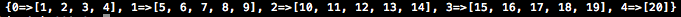

group_by
How does it work?
02/05/15
Have you ever wanted to group elements of data before into sub-groups in Ruby but didn't know how?
I am new to programming, and I just discovered an enumberable method that can be used for just that.
The method group_by is a way of getting elements from an array into a hash by organizing them under arrays whose keys are the results returned by the block.
For example, if we wanted to organize a list of movies aphabetically
movies = ["Star Wars", "Jaws", "Harry Potter", "Alphaville", "Alien", "Django Unchained", "Dancer in the Dark", "Tron"]
but wanted to pull them up in groups like 'A-F','G-L','M-S','T-Z'. we would type:
Say you wanted to catagorize numbers by how many times 5 can go into them. numbers = (1..20).to_a.group_by {|num| num/5}
You get the resulting hash:
